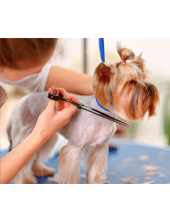
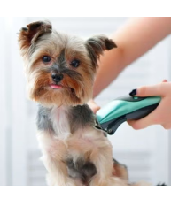

A higiene do Pet é indicada por inúmeros veterinários, pois com os cuidados preventivos, é possível reduzir a transmissão de doenças para pets e humanos.
Na Late & Mia Petshop, o banho inclui o tratamento da pelagem através de uma hidratação profunda para deixar o pelo do pet saudável, brilhoso e cheiroso.
Conheça as Etapas do Banho
- Banho
- Secagem
- Escova na Pelagem
- Limpeza dos Ouvidos
- Corte das Unhas
A tosa do seu Pet é realizada de acordo com a sua ecolha. Entretanto, podemos realizar uma avaliação e sugerir um modelo de corte que seja adequado para ele!
O corte pode ser feito tanto em pets de pelos longos quanto pelos curtos, sendo avaliado qual o tipo de tosa adequado para cada pelagem.
- Tosa na Tesoura: Opção indicada para pets de pelagem longa, pois contribui na prevenção de alergias;

- Tosa na Máquina: Esta opção é feita com a máquina de tosa e deixa a pelagem bem baixa.

Além disso, o Late & Mia Petshop conta com serviços de tele-busca, onde é diponibilizado um transporte exclusivo para realizar o Banho e Tosa em nossa unidade, garantindo todo o conforto e segurança no transporte do seu pet.
A contratação deste serviço pode ser realizada ao contratar o serviço de banho e/ou tosa.
- Porte Pequeno
Somente Banho: R$49,99
Somente Tosa: R$39,99
Banho e Tosa: R$79,99
- Porte Médio
Somente Banho: R$69,99
Somente Tosa: R$59,99
Banho e Tosa: R$99,99
- Porte Grande
Somente Banho: R$79,99
Somente Tosa: R$69,99
Banho e Tosa: R$109,99
- Serviço de Tele-Busca
Valor Único: R$7,99